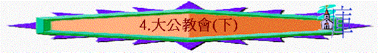

第四課：大公教會（下）
Ｄ）混亂的危機
| 教皇若望廿三世在第二次梵蒂崗大公會議稱基督徒「親愛的弟兄」，並邀他們出席是次大公會議。 | 因為靈恩的問題，以至天主教與基督教之間有更多的交流及認同。 | |
| 天主教曾多次送贈名譽學位及名銜來褒獎基督教的多位領袖人物，並作出多樣的合作，如社關、學術交流及宣教。 | 部份基督教人仕欲借助天主教的勢力來左右社會上的問題及政治問題，因而作出妥協及合作。 |
１）在教皇約望廿三世之前，天主教是禁止所有天主教徒出席基督教任何聚會，但在教皇約望廿三世開始，把這對立仇恨的態度改變，更邀請基督教人仕出席第二次梵蒂崗大公會議，又在當中稱他們為「親愛的弟兄」。尤其普世合一運動的人仕更是早已響往與天主教合作，故對這樣的邀請不分底蘊地認同。
２）在一九六七年，第一位天主教徒經歷靈恩現象，並以靈恩經歷能使天主教徒更堅信天主教的信仰，故得以被天主教內部接納，更因為靈恩的問題，以至天主教與基督教之間有更多的交流及認同，以彼此既的靈恩的經歷都是同出一靈。
３）天主教曾多次送贈名譽學位及名銜來褒獎基督教的多位領袖人物，以表揚他們在世界上的貢獻，這樣的做法把很多人對天主教的戒心放鬆，而致與他們多有合作，先從社會問題上開始，繼而在學術上交流及神學上對話，甚至開放教會的講台及神學院的講席來接受天主教，在宣教的工作上也有與天主教同工的情形出現。
４）因著許多天主教徒在服務人群上深得讚賞，而使眾多基督教機構及教會從在金錢上的支助，轉變為與天主教合作。但許多人卻沒有從永恆的角度來仔細觀察天主教所作的，只因他們表面的工作受吸引，但是他們把更多的人引到滅亡的深淵中卻沒有注意。
５）因著對現今社會的眾多問題深切關注，為求使社會問題得到解決，也因涉足政治上的干預，很多基督教領袖不惜與天主教合作，甚至以教皇為現今社會上道德的領袖，藉其龐大勢力來左右現今的時局。
１．
不能接受任何附帶的得救條件２．
人的名望不能否定真理的教導３．
社關責任與信仰是不同的範圍４．
欣賞部份地方不等同接納全所有５．
信仰對話不是每個信徒都適合作的６．
不可用交換方式去贏取天主教徒的心
Ｅ）謹慎的分辨
| 不偏激對立：勿以強硬態度指斥對方是錯及以偏蓋全，免落入爭拗而非討探信仰中。 | ||
| 按事實探討：根據歷史的事實來反證天主教的問題，要讓對方自己發。又按聖經正典的真理來指出得救之法及確據。 | ||
| 美好的生命：天主教徒多看行為，故應有好的操守來贏取其信任，又因天主教的人際關係較為疏離，故應以關心對方靈魂的熱誠來打動其心。 | ||
１）天主教的教義中不是單單相信「因信稱義」，也不是單單相信耶穌基督為惟一的中保，在祂以外還得有「聖母及聖人」等來襄助救恩，並加插了很多得救的條件，如彌撒、煉獄及受洗等，這都不是我們可以接納的，要留心聖經的話：
「弟兄們，那些離間你們、叫你們跌倒、背乎所學之道的人，我勸你們留意躲避他們。」羅十六：１７
「因為只有一位神，在神和人中間，只有一位中保，乃是降世為人的基督耶穌。」提前二：５
「聖靈明說，在後來的時候，必有人離棄真道，聽從那引誘人的邪靈和鬼魔的道理。這因為說謊之人的假冒；這等人的良心如同被熱鐵烙慣了一般。他們禁止嫁娶，又禁戒食物（或作：又叫人戒葷），就是神所造、叫那信而明白真道的人感謝著領受的。」提前四：１—３
「耶穌基督，昨日、今日、一直到永遠、是一樣的。你們不要被那諸般怪異的教訓勾引了去；因為人心靠恩得堅固纔是好的，並不是靠飲食。那在飲食上專心的從來沒有得著益處。」來十三：８—９
２）現今雖有眾多基督教界內著名及有權勢的領袖傾向天主教，但我們要留心我們所跟隨的是主耶穌基督，若有人所傳的與真理不合，不論他的名望有多大都不能改變我們跟從主的心，請看：
「但無論是我們，是天上來的使者，若傳福音給你們，與我們所傳給你們的不同，他就應當被咒詛。我們已經說了，現在又說，若有人傳福音給你們，與你們所領受的不同，他就應當被咒詛。」加一：８—９
我們對這些傾向天主教的人仕或機構；雖不會在講台指名道姓的指責，但我們堅決的不認同他們的手段及行徑，對於他們所作與真理偏歪的事絕不作任何的妥協及合作，他他們雖有某些教導若合乎真理，我們仍是存儆醒的心來面對，不因他們某些恩賜及供獻而忘卻了化別為聖的原則，比方他們的著作我們可以看，但卻不因敬配而認同他們所有的工作及方向。
３）天主教是藉著社關及政治的問題來達成他們與基督教的合一，雖則他們在道德上有極大的供獻，但我們絕不可把信仰本末倒置，要留心人世間所作的不能取代人靈魂的需要，若要棄絕福音的本質來換取屬地的服務機會，我們寧可放棄屬地的工作，因為它只是一個叫人忘卻永恆需要的絆腳石。天主教在很多的服務上從不談信仰，因為他們認為每個人只要真心而堅決地面向他們所信的神，他們都是可以得救的，這是我們所否認的。即使他們會傳天主教的信仰，我們也相信不過是領人落入更深的沉淪中。
４）若撇開宗教的角色及立場來看，我們是的確要敬配天主教徒的服事人群的精神，但畢竟不能與信仰分割來看，我們便不能接受他們是美善的，因為他們所服事的人是被引進永遠的沉淪中，他們的工作在永恆的觀念來看是極大的禍害。也有的天主教徒在學術上是極大的成就，但若因而認同或接受他們的信仰則是極不合宜的。
５）在基督教中有很多人與天主教人仕作出對話，但我們要留心的是聖經上的分別之原則， 神從沒有叫我們與異端信仰者對話，乃是要我們分別出來。至於有的人為研究天主教的錯誤而與他們有對話則作別論，但我們仍要保持儆醒的心，免得在學術的研究中從恩中失落了，也要謹記 神是使用某的有份量的人來作這樣的工作，不是鼓勵每個基督徒都要如此作，切勿以別人的行徑作為接觸天主教的理由。
６）天主教的問題也是涉及政治、普世合一運動、靈恩運動及新紀元運動等，故在面對上需要多加留意其他相關的問題，也在此要特別存儆醒的心。
７）我們需要把福音傳給天主教徒，但切忌以此作為交換的方法，如到天主教裡聚會，因為在當中的眾多儀式是涉及拜偶的，這是明顯得罪 神的事。信徒也不宜看關乎天主教的書，因為易迷失在當中的虛幻及理想中。至於中古時期的天主教徒，則要按他們個人的信仰來看，也要分開欣賞某的長處及分辨錯謬，如「禱」這詩歌中的意境及情操是高尚，也合乎真理的教導，但作者本身卻是支持天主教的教義，我們唱這詩歌不代表我們接受他的信仰，這是當清晰的，否則易落入恐慌或激進中。